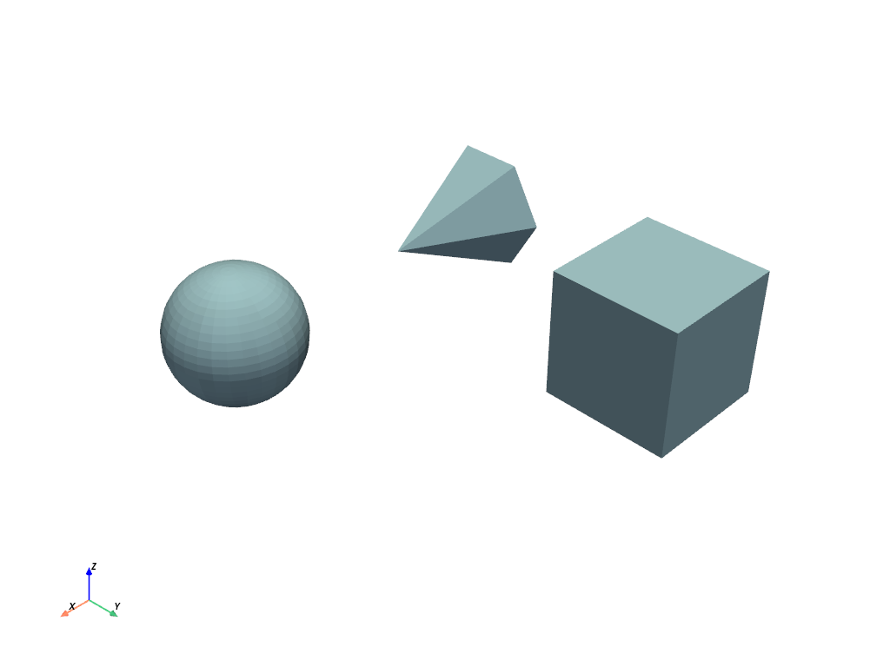
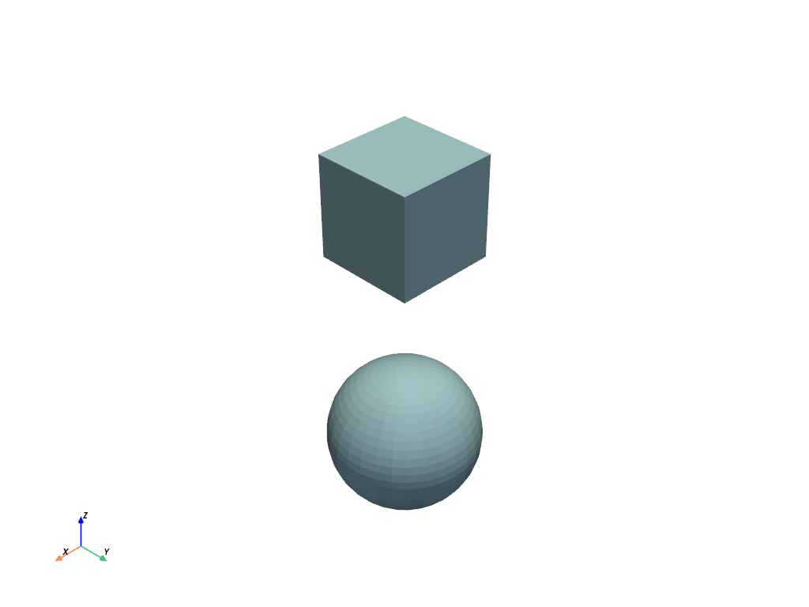

pyvista.MultiBlock#
- class MultiBlock(*args, **kwargs)[ソース]#
反復可能な多数のデータセットを保持する複合クラス．
これは vtkMultiBlockDataSet クラスをラップ/拡張し，これらのデータセットを簡単にプロットし，Pythonicな方法で合成を使用できるようにしたものです．
このデータ構造をインデックスで反復処理することができるので，
MultiBlockはリストのようなものだと考えることができます． また，文字列名でブロックにアクセスできるなど，辞書的な機能も備えています．バージョン 0.36.0 で変更:
MultiBlockはよりリストライクになり，collections.abc.MutableSequenceを継承しています． 複数の不適合な動作が削除または修正されました．- パラメータ:
- *args
dict,optional データオブジェクト辞書．
- **kwargs
dict,optional その他のオプションについては，
pyvista.read()を参照してください．
- *args
例
>>> import pyvista as pv
空の複合データセットを作成します．
>>> blocks = pv.MultiBlock()
コレクションにデータセットを追加します．
>>> sphere = pv.Sphere() >>> blocks.append(sphere)
名前付きのブロックを追加します．
>>> blocks["cube"] = pv.Cube()
オブジェクトのリストからインスタンスを作成します．
>>> data = [ ... pv.Sphere(center=(2, 0, 0)), ... pv.Cube(center=(0, 2, 0)), ... pv.Cone(), ... ] >>> blocks = pv.MultiBlock(data) >>> blocks.plot()
 辞書からインスタンスを作成します．
>>> data = { ... "cube": pv.Cube(), ... "sphere": pv.Sphere(center=(2, 2, 0)), ... } >>> blocks = pv.MultiBlock(data) >>> blocks.plot()
 コレクションの反復処理をします．
>>> for name in blocks.keys(): ... block = blocks[name] ...
>>> for block in blocks: ... # Do something with each dataset ... surf = block.extract_surface() ...
メソッド
MultiBlock.append(dataset[, name])データセットを次のブロックインデックスに追加します．
MultiBlock.as_polydata_blocks([copy])この MultiBlock 内のすべてのデータセットを
pyvista.PolyDataに変換します．MultiBlock.clean([empty])Nullブロックをすべて削除します．
MultiBlock.copy([deep])マルチブロックのコピーを返します．
MultiBlock.copy_meta_from(ido, deep)別のオブジェクトからこのオブジェクトにpyvistaメタデータをコピーします．
MultiBlock.extend(datasets)MultiBlockをIterableで拡張します．
MultiBlock.get(index[, default])ブロックを名前で返します．
MultiBlock.get_block_name(index)指定したインデックスのブロック名を文字列で返します．
MultiBlock.get_data_range(name[, allow_missing])すべてのブロックにわたる配列名の最小値/最大値を返します．
ブロック名でインデックス番号を検索します．
MultiBlock.insert(index, dataset[, name])インデックスの前にデータを挿入します．
データセット内のすべてのブロック名を返します．
MultiBlock.plot([off_screen, full_screen, ...])PyVista，numpy，またはvtkオブジェクトをプロットします．
MultiBlock.pop([index])指定したインデックスのブロックをポップします．
MultiBlock.replace(index, dataset)キー名を保持したまま，インデックスでデータセットを置き換える．
MultiBlockをインプレースで反転させます．
MultiBlock.set_active_scalars(name[, ...])スカラーを名前で検索し，適切にアクティブとして設定します．
MultiBlock.set_block_name(index, name)指定したインデックスにブロックの文字列名を設定します．
MultiBlock.shallow_copy(to_copy)指定されたマルチブロックをこのマルチブロックに浅くコピーします．
ネストされたすべてのデータ構造がPyVistaデータセットとしてラップされていることを確認します．
アトリビュート
ブロック間の境界の最小/最大を検索します．
境界ボックスの中心を返します．
すべてのブロックが
pyvista.PolyDataである場合に，Trueを返します．境界ボックスの対角線の長さを返します．
ブロックセットの総数を返します．
このデータセット内のすべてのメッシュの合計ボリュームを返します．